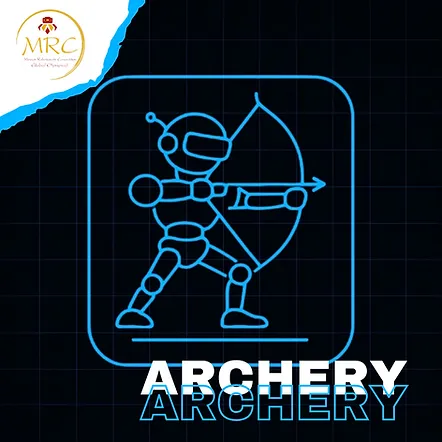
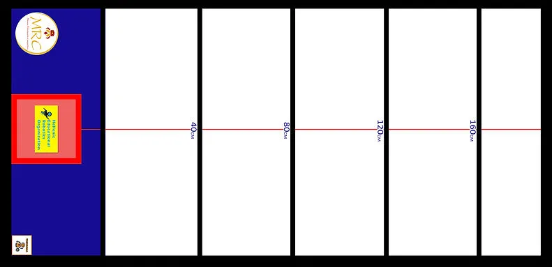
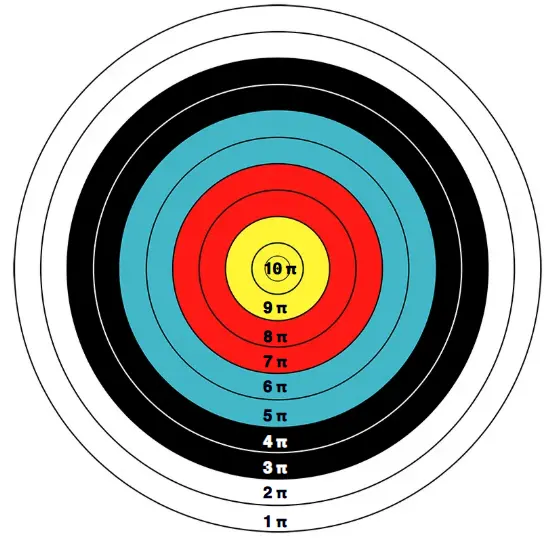

MRC ARCHERY (射箭挑戰)
希臘官方原文規則（English）中文賽事規則
射箭原始內容
規則內容
射箭
年齡組別
兒童組 (10至12歲 / 國小)
青少年組 / 青年組 (12歲以上至18歲 / 國中及高中)
成人組 (18歲以上) - 僅限進階組別
⚠️ 本項目僅設一個級別：
所有類型的機器人同場競技。
🚨 各年齡組別分別進行比賽。
⚠️ 第零條規則 – 零容忍原則與常識
在所有運動項目中，均適用第零條規則，其內容如下：
➤「如果您不確定某件事是否被允許，那麼它很可能是不被允許的。」
所有規則皆基於常識、運動精神以及所有參與者的安全。
任何蓄意曲解、違反規則本意，或試圖利用灰色地帶獲取不公平優勢的行為，將不被容忍，並可能導致隊伍被取消比賽資格。
🎯 目標
機器人運動員的目標是使用其機械機構和普通橡皮筋，精確地命中靶心。
這項運動需要準確性、工程技術和正確的計算。
👥 隊伍 – 教練
- 比賽以隊伍為單位參與，而非個人。
- 每隊可由二 (2) 至三 (3) 名隊員組成。
- 每隊必須指定最多一 (1) 名機器人運動員技師。僅允許機器人運動員技師進入準備區或比賽區域。其餘隊員必須留在比賽場地內，但不得排隊等候。➤ 換言之，他們不能佔用額外位置。若隊伍未遵守此規則，將被取消資格。
- 允許隊伍在每次球道嘗試前更換指定的技師，讓所有隊員都有機會積極參與該項目，但此非強制性。
- 所有隊員必須年滿 10 歲 (相當於國小四年級或以上)。
- 隊伍教練必須年滿 20 歲。
- 為確保比賽順利進行，教練每註冊 3 支隊伍參加比賽，就必須配備 1 名助理。
- 每隊僅允許使用一台機器人。比賽期間不得更換機器人。
- 隊伍之間不得共用同一台機器人。
- 若隊伍的機器人遇到嚴重的技術問題，經主裁判許可後，僅允許更換微控制器或電子元件。
🤖 機器人運動員 – 機器人類別
- 本競賽開放給所有機器人運動員，無論使用何種機器人套件或硬體。
- 也允許自製的機器人運動員參賽。
- 所有機器人運動員在各年齡組別中同場競技。
⚙️ 機器人運動員要求 – 規格
- 機器人運動員必須是自主運作的。這表示它應在按下啟動按鈕時自動調整拋物線高度，而非手動調整。
- 弓應保持垂直位置，如同射箭手執弓的方式。不得像弩一樣保持水平位置。
- 其最大尺寸必須為 寬 25 公分 x 長 25 公分，且重量不超過 800 公克。
- 為確認上述規格，機器人運動員將被秤重，並且必須能舒適地放入檢測箱中。
➤ 檢測箱尺寸為 (25 x 25) 公分，另有正負二 (2) 公釐的公差。
- 機器人運動員應在不施加壓力的情況下放入檢測箱。
- 機器人運動員必須具備啟動和停止按鈕。
- 對於弓，允許使用任何直徑、寬度不超過 4 公釐的普通橡皮筋。
- 機器人運動員不得損壞賽道或以任何方式對觀眾構成威脅。
- 無論機器人類別，僅允許使用 1 個微處理器、4 個馬達和 4 個感測器。
🧪 技術檢查
- 初次技術檢查於比賽當日，在機器人運動員第一次嘗試時進行。
- 在初次檢查期間，將詢問隊伍關於機器人程式的關鍵部分。➤ 隊伍必須打開裝有機器人程式的筆記型電腦。➤ 若從回答中明顯看出隊伍不理解程式，他們將受到相當於其在該項目中所得分數 -20% 的罰則。
- 技術檢查包括根據上述規格進行的機器人檢查。➤ 若機器人未達要求，將不允許其參賽，並自動取消其在该項目的資格。
- 初次檢查完成後，機器人運動員將被分配一個唯一的 ID 編碼。
- 若隊伍在初次技術檢查時未到場，將導致自動取消比賽資格。
- 在每次嘗試前，助理裁判也會進行二次技術檢查。
- 機器人運動員技師必須佩戴安全眼鏡。防護裝備在比賽場地上，賽前和賽中皆為強制性。防護裝備將在技術檢查期間進行檢查。
- 缺乏全部或部分防護裝備將成為隊伍被取消該項目資格的理由。
- 若在比賽過程中，裁判判定機器人運動員違反或未達規定之規格，裁判有權立即取消其資格。
🏟️ 場地
- 比賽墊尺寸為 長 2.36 公尺 x 寬 1.14 公尺 x 周邊圍欄高度 5 公分。
- 其顏色為白色，且防水布的質地可印刷。
- 周邊有一個 5 公分厚的黑色邊框。
- 在寬度的一側有一個藍色矩形框，尺寸為 1.05 公尺 x 40 公分。
- 在其中間且位於邊緣處，有一個紅色正方形框，尺寸為 30 公分 x 30 公分，其中有一個底座，尺寸為 長 25 公分 x 寬 25 公分 x 高 10 公分（機器人運動員位置）。
- 靶心是一個保麗龍圓形，總直徑為 40 公分。
➤ 靶心分為 10 個區域，有 10 個同心圓。
➤ 一箭可達到的最高分數是 10 分，即命中圓心。後續每圈射中，分數遞減 1 分。每位機器人運動員的目標是收集盡可能多的分數。
➤ 若箭矢觸及 2 個圓圈，則以分數較高的圓圈計分。
➤ 若箭矢未命中靶心，則得 0 分。
- 靶心正對機器人運動員，距離表面高度為 35 公分。
- 每隊必須自行製作並提供箭矢。箭矢重量必須小於三十 (30) 公克，箭頭必須圓鈍、不尖銳，使用上必須安全。
- 箭矢可用圓頭釘子、削去尖端並磨圓的牙籤，或圓頭的粗刺繡針製作。
- 裝上箭矢、弓拉到最滿時，機器人運動員連同箭矢在射擊方向上的總長度，不得超過三十 (30) 公分。
- 在比賽開始前，將有測試回合供機器人運動員進行測試，時間有限，具體時間表將於比賽當日公布。


🏆 比賽
一般資訊 - 規則
⏱️ 準備
1. 機器人運動員被放置在賽道上的位置，機器人正面朝向靶心。
2. 技師在機器人運動員後方就位，並事先穿戴好防護裝備。
🏁 開始 – 比賽流程
- 機器人運動員必須在其技師按下啟動-停止按鈕五秒後自主啟動（時間延遲）。➤ 在這五秒內，技師必須為安全起見向後退幾步。
- 機器人運動員必須將其箭矢射向靶心。
- 每次嘗試的目標距離：
➤ 第 1 次嘗試：距離黑線 40 公分
➤ 第 2 次嘗試：距離黑線 80 公分
➤ 第 3 次嘗試：距離黑線 120 公分
➤ 第 4 次嘗試：距離黑線 160 公分
每次嘗試的目標距離：
- ➤ 第 1 次嘗試：距離黑線 40 公分
- ➤ 第 2 次嘗試：距離黑線 80 公分
- ➤ 第 3 次嘗試：距離黑線 120 公分
- ➤ 第 4 次嘗試：距離黑線 160 公分
➤ 每次箭矢均朝著該次嘗試設定的總距離發射。
- 機器人運動員必須在下一台機器人運動員上場前完成全部四個距離。
- 在每個距離，機器人運動員必須自主調整其高度，可以透過：
- 按下啟動按鈕後自動調整，或
- 使用感測器
⚠️ 禁止手動調整。➤ 技師與機器人運動員唯一的接觸僅限於箭矢回饋後的按鈕操作。❌ 任何違規行為將使機器人運動員的該次嘗試無效，並在該距離得 0 分。
在每個距離，機器人運動員必須自主調整其高度，可以透過：
- 按下啟動按鈕後自動調整，或
- 使用感測器 ⚠️ 禁止手動調整。➤ 技師與機器人運動員唯一的接觸僅限於箭矢回饋後的按鈕操作。❌ 任何違規行為將使機器人運動員的該次嘗試無效，並在該距離得 0 分。
- 機器人運動員獲得的總分數是所有距離分數的總和。
🔁 回合 – 嘗試
- 該項目的時間為 2 小時。（此時間可能根據參賽人數延長）。在此期間，每位機器人運動員將根據組委會公布的順序，在賽道上進行多次嘗試。
- 若輪到技師時其不在場，則該次嘗試視為放棄，由下一位技師遞補。➤ 錯過回合的技師必須等到所有其他嘗試完成後，才能再次輪到。
- 每次嘗試前，機器人運動員必須通過助理裁判進行的二次技術檢查。
- 裁判記錄機器人運動員每次嘗試的分數。
- 機器人運動員的隊伍有責任確保其在指定時間窗口內進行每次嘗試。
- 在嘗試之間，允許隊伍對其機器人運動員及其程式碼/演算法進行修正，➤ 但不允許進行測試。
❌ 嘗試結束
1. 當機器人運動員完成全部 4 個距離的比賽時。
2. 若機器人運動員遇到技術問題。若技術問題使嘗試在 4 個距離全部完成前結束，已完成距離的分數照算，未完成的距離各記零 (0) 分。
3. 若機器人運動員在嘗試過程中證明無法直線發射箭矢，且對其自身、裁判或比賽場地上的參與者構成危險時。
🟥 隊伍取消資格
在以下情況下，隊伍將被取消比賽資格並必須退出：➤ 隊伍的成績將不予計算，也不會出現在官方比賽排名中。
- 若機器人運動員不符合運動規則中定義的規格，且隊伍拒絕進行必要的調整。
- 若任何技師行為不當或不尊重他人，使用侮辱性語言、挑釁，或對其他參與者或裁判進行口頭（或其他方式）攻擊。
- 若發現機器人運動員並非自主運作，而是透過藍牙、Wi-Fi 或任何類似技術進行遠端控制。
✅ 允許 / ❌ 禁止
✅ 允許：
- 允許使用任何直徑、寬度不超過 4 公釐的普通橡皮筋。
❌ 禁止：
- 機器人運動員使用可能傷害觀眾、裁判甚至其技師的零件。
- 使用黏著劑來增加與運動員安裝表面的附著力。
- 比賽期間將機器人運動員分解成碎片或以任何方式擴展。
- 遠端控制。
- 使用氣動裝置。
- 使用回力馬達。
- 比賽期間與電腦或任何其他電子設備進行無線連接（藍牙/Wi-Fi）。若發現隊伍（隊員或教練）在比賽期間無線連接其機器人，將被取消該項目的資格。
🏆 獲勝者
最終排名採計各隊機器人運動員在單次嘗試中獲得的最高總分，不同嘗試的分數不相加。
最佳分數用於決定以下名次：
🥇 第一名 🥈 第二名 🥉 第三名
若出現平手，則考慮隊伍先前的最佳分數等來決定。